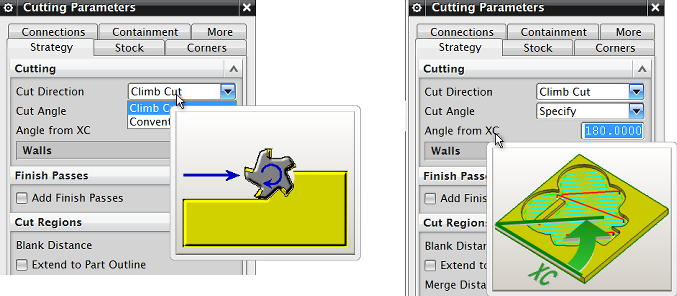

Cutting Parameters and Non Cutting Moves dialog box enhancements
What is it?
-
Images that illustrate options in the Cutting Parameters and Non Cutting Moves dialog boxes are now displayed only in tooltips when you pause your cursor on the options. In previous releases, these images were displayed directly in the dialog box.

The display of these images is controlled by the Show Pictures in Dialog Options customer default.
|
Tip |
To find a customer default, choose File→Utilities→Customer Defaults, and click Find Default |
You can also widen the Cutting Parameters dialog box so that one row of tabs is displayed instead of two. NX remembers the width for the current session only.